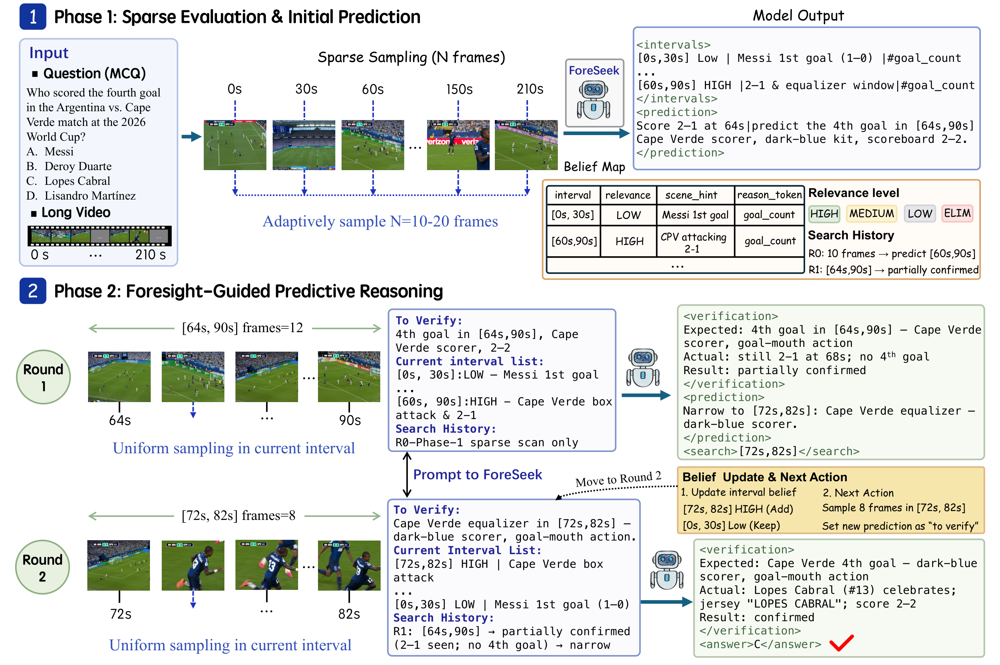

ForeSeek
ForeSeek searches a long video by predicting what unseen intervals should contain, then checking those predictions. A failed expectation is kept as evidence: that interval is set aside and the search moves elsewhere.

ForeSeek searches a long video by predicting what unseen intervals should contain, then checking those predictions. A failed expectation is kept as evidence: that interval is set aside and the search moves elsewhere.
